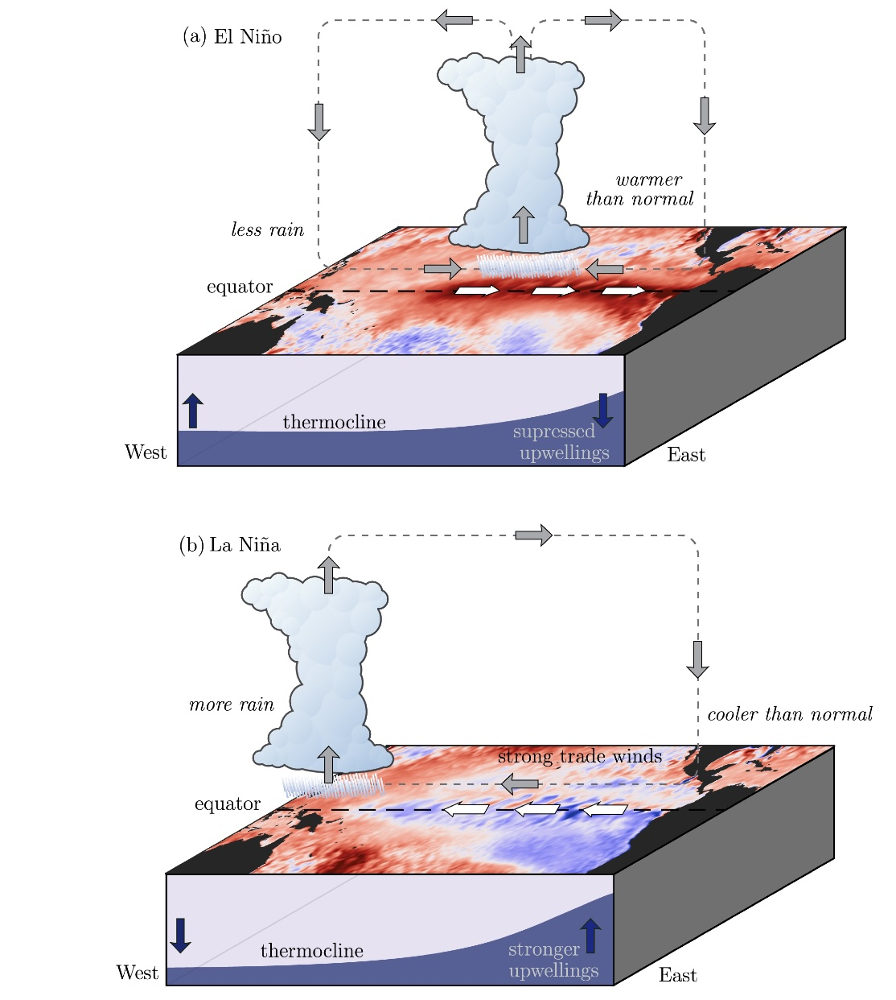
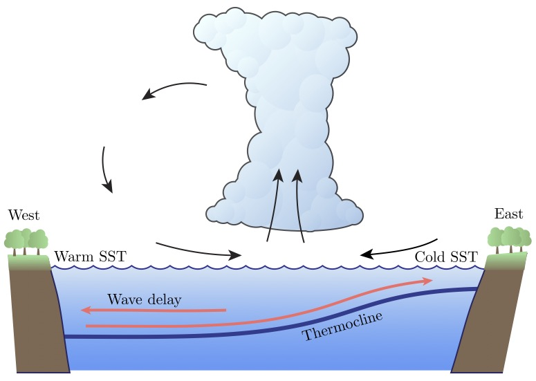

The El Niño-Southern Oscillation (ENSO)
What is ENSO?

The delayed-action oscillator (DAO)

Current Working Project
Comprehensive bifurcation analysis of the pfSS model

Generalization of Feedback with implicit state-dependent delay in a conceptual model of El Niño
Generalization of Seasonal forcing dominated dynamics of a piecewise smooth Ghil-Zaliapin-Thompson ENSO model